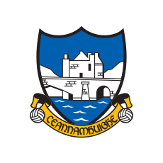
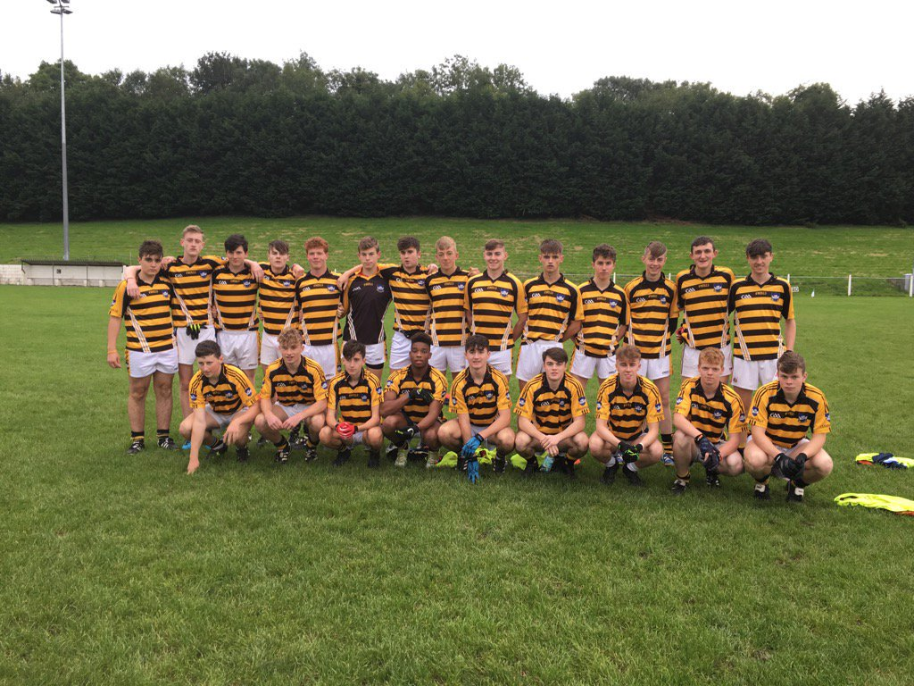

Canovee Football Club
2003-Present
Canovee GAA Club is based in the village of Carrigadrohid, five miles east of Macroom in County Cork.
The club came into existence at the time of the foundation of the GAA itself in 1884.
In those early years, Canovee competed in the senior and junior championships organised by the newly formed Cork County Board. Even though the club went out of existence briefly in the 1920s,it was reformed in 1932 and joined the Mid Cork Divisional Board (Bord Muscrai).

This is a link to the Canovee GAA webpage.
Achievements
Member of Canovee Gaelic Football Club team winners of an U13 county medal
u14 Championship winners, went unbeaten for the year
Junior B league winners 2017
